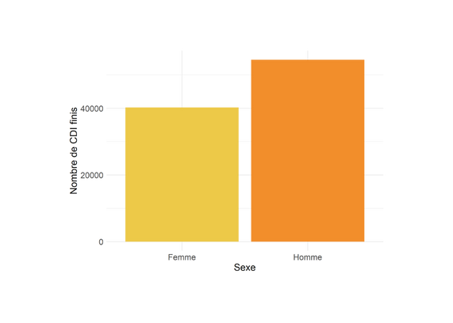
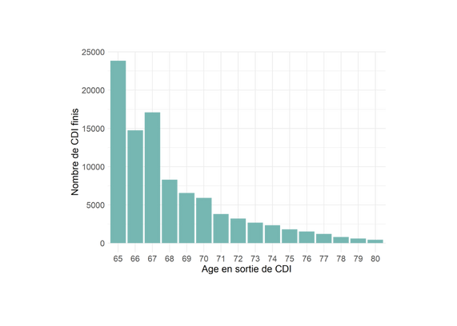
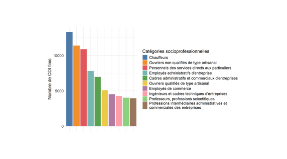
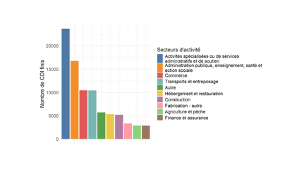

Origine des données Data sources
L’analyse s’appuie sur des données administratives issues des déclarations sociales nominatives (DSN), générées automatiquement chaque mois par les logiciels de paie des employeurs. The analysis relies on administrative data from the French monthly payroll declarations (DSN), which are automatically generated by employers’ payroll software.
La base recense l’ensemble des contrats en France depuis 2021 (hors travailleurs indépendants et salariés de particuliers). L’extraction utilisée comprend 5,279,677 completed contracts between January 2021 and August 2025, including 399,272 permanent contracts, concerning individuals aged between 65 and 80 at the end of their contract. The database provides exhaustive coverage of employment contracts in France since 2021 (excluding self-employed workers and household employees). The extraction includes 5,279,677 completed contracts between January 2021 and August 2025, among which 399,272 permanent contracts, involving individuals aged between 65 and 80 at contract termination.
Distribution du sexe parmi les CDI finis en 2024 Gender distribution among permanent contracts ending in 2024

Le nombre de fins de CDI est plus élevé chez les hommes que chez les femmes. Cette différence s’explique notamment par un taux d’emploi plus élevé des hommes âgés de 55 à 64 ans (DARES, 2024). The number of permanent contract terminations is higher among men than among women. This difference can partly be explained by the higher employment rate of men aged 55–64 (DARES, 2024).
Distribution de l’âge de fin de CDI en 2024 Age distribution at permanent contract termination in 2024

Le nombre de fins de CDI diminue avec l’âge, probablement en lien avec la baisse progressive du nombre de salariés encore en emploi. On observe cependant un pic à 67 ans, âge du taux plein. The number of permanent contract terminations decreases with age, likely reflecting the declining number of employed individuals. However, a noticeable increase is observed at age 67, the age of full pension eligibility.
Proportion des 10 catégories socioprofessionnelles les plus représentées, en 2024 Share of the 10 most represented occupational categories in 2024

Distribution des 10 secteurs d’activité les plus représentés, en 2024 Distribution of the 10 most represented sectors of activity in 2024

Le commerce constitue le troisième secteur comptant le plus de fins de CDI, tandis que l’administration publique, la santé et l’éducation occupent la deuxième position. Wholesale and retail trade ranks third in terms of permanent contract terminations, while public administration, health, and education jointly rank second.
Distribution des motifs de rupture de CDI en 2024 Distribution of reasons for permanent contract termination in 2024
Les départs volontaires à la retraite constituent le motif de rupture le plus fréquent chez les salariés âgés de 65 à 80 ans. Voluntary retirement is the most frequent reason for permanent contract termination among employees aged 65 to 80.
Note : La catégorie « erreur de déclaration » regroupe les disparitions anormales de contrats et des motifs réservés aux CDD renseignés pour des fins de CDI. Note: The “reporting error” category includes abnormal contract disappearances and termination reasons reserved for fixed-term contracts but recorded for permanent contracts.
Proportion des motifs de rupture de CDI en fonction de l’âge Share of termination reasons by age at contract exit
Le taux de départ à la retraite est majoritaire jusqu’à 67 ans, puis diminue progressivement. Le taux de démission augmente avec l’âge, suggérant une substitution entre ces deux motifs. Retirement remains the dominant exit route up to age 67, after which it gradually declines. Conversely, resignation increases with age, suggesting a substitution between these two exit pathways.